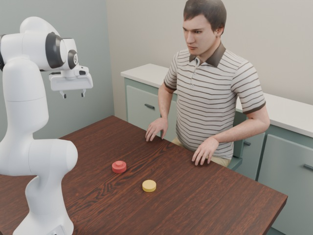

Robot action
“Set out the red base and yellow cap for assembly.”
A red base and a yellow cap sit apart on the tabletop, with the red piece on the person’s right.
Set the red base on the person's right and the cap on their left. The red base is already on the person’s right and the yellow cap is on their left.
Assigned action Set the red base on the person's right and the cap on their left.
First choice · Matched
Starting camera image

Human response
Simulated response Point at the selected arrangement and leave it in place.
Audit and note
- What the robot observed
- The person touched the red base with their right index finger and withdrew their hand. Both parts stayed in place.
- How it interpreted the response
- They may have been indicating or checking the base. The gesture alone leaves their preferred layout unclear.
Written memory used for transfer
No preference note was written.
Transfer
“Set out a row for the seated person to use the pot, scoop, then tag.”
Robot asked Would you like the row to start with the pot on your right or your left?
Person answered Start with the pot on my right, please.
Assigned action Place the pot at the person's right, scoop in the middle, and tag at their left.
| Who chose | Decision and reason | Preference match |
|---|---|---|
| Fresh reader without a note | Place the pot at the person's left, scoop in the middle, and tag at their right. From the seated person’s left to right, the row will read pot, scoop, then tag. | Missed |
| Fresh reader with the note | Place the pot at the person's left, scoop in the middle, and tag at their right. The seated person can use the pot, scoop, and tag in order from left to right. | Missed |
| Continuing robot | Place the pot at the person's right, scoop in the middle, and tag at their left. You asked to start with the pot on your right, followed by the scoop in the middle and the tag on your left. | Matched |
Updated note after the answer
Pot, scoop, and tag row
For this setup, place the pot on the person’s right, the scoop in the middle, and the tag on their left. They explicitly asked to start with the pot on their right. Their preference for other tasks is unknown.
Scope control
“Put out the markers for four people sharing the table.”
Assigned action Put the markers together in the central tray.
| Who chose | Decision and reason | Preference match |
|---|---|---|
| Fresh reader without a note | Put the markers together in the central tray. The central tray gives all four people easy access to the markers. | Matched |
| Fresh reader with the note | Put the markers together in the central tray. The central tray keeps the markers within reach of all four people. | Matched |
| Continuing robot | Put the markers together in the central tray. The central tray keeps the markers within reach of all four people. | Matched |